에너지관리기사 (2018-04-28 기출문제)
1과목: 연소공학
1. 연도가스 분석결과 CO2 12.0%, O2 6.0%, CO 0.0%이라면 CO2 max는 몇 %인가?
- 13.8
- 14.8
- 15.8
- 16.8
(정답률: 65%)

2. 연소관리에 있어서 과잉공기량 조절 시 다음 중 최소가 되게 조절하여야 할 것은? (단, Ls：배가스에 의한 열손실량, Li：불완전연소에 의한 열손실량, Lc：연소에 의한 열손실량, Lr：열복사에 의한 열손실량일 때를 나타낸다.)
- Ls＋Li
- Ls＋Lr
- Li＋Lc
- Li
(정답률: 73%)
3. 다음 중 분해폭발성 물질이 아닌 것은?
- 아세틸렌
- 히드라진
- 에틸렌
- 수소
(정답률: 57%)
4. 과잉공기량이 연소에 미치는 영향으로 가장 거리가 먼 것은?
- 열효율
- CO 배출량
- 노 내 온도
- 연소 시 와류 형성
(정답률: 72%)
5. 최소착화에너지(MIE)의 특징에 대한 설명으로 옳은 것은?
- 질소농도의 증가는 최소착화에너지를 감소시킨다.
- 산소농도가 많아지면 최소착화에너지는 증가한다.
- 최소착화에너지는 압력증가에 따라 감소한다.
- 일반적으로 분진의 최소착화에너지는 가연성가스보다 작다.
(정답률: 60%)
6. 기체연료용 버너의 구성요소가 아닌 것은?
- 가스량 조절부
- 공기/가스 혼합부
- 보염부
- 통풍구
(정답률: 61%)
7. 다음 중 습식집진장치의 종류가 아닌 것은?
- 멀티클론(multiclone)
- 제트 스크러버(jet scrubber)
- 사이클론 스크러버(cyclone scrubber)
- 벤츄리 스크러버(venturi scrubber)
(정답률: 67%)
8. 다음 중 연소 전에 연료와 공기를 혼합하여 버너에서 연소하는 방식인 예혼합 연소방식버너의 종류가 아닌 것은?
- 저압버너
- 중압버너
- 고압버너
- 송풍버너
(정답률: 58%)
9. 연소가스에 들어 있는 성분을 CO2 , CmHn, O2, CO의 순서로 흡수 분리시킨 후 체적 변화로 조성을 구하고，이어 잔류가스에 공기나 산소를 혼합, 연소시켜 성분을 분석하는 기체연료 분석 방법은?
- 헴펠법
- 치환법
- 리비히법
- 에슈카법
(정답률: 76%)
10. 다음 중 중유연소의 장점이 아닌 것은?
- 회분을 전혀 함유하지 않으므로 이것에 의한 장해는 없다.
- 점화 및 소화가 용이하며, 화력의 가감이 자유로워 부하 변동에 적용이 용이하다.
- 발열량이 석탄보다 크고, 과잉공기가 적어도 완전 연소시킬 수 있다.
- 재가 적게 남으며, 발열량, 품질 등이 고체연료에 비해 일정하다.
(정답률: 72%)
11. 보일러실에 자연환기가 안될 때 실외로부터 공급하여야할 공기는 벙커C유 1L 당 최소 몇 Nm3이 필요한가? (단, 벙커C유의 이론공기량은 10.24Nm3/kg, 비중은 0.96, 연소장치의 공기비는 1.3으로 한다.)
- 11.34
- 12.78
- 15.69
- 17.85
(정답률: 59%)
12. 수소가 완전 연소하여 물이 될 때 수소와 연소용 산소와 물의 몰(mol)비는?
- 1：1：1
- 1：2：1
- 2：1：2
- 2：1：3
(정답률: 80%)
13. 버너에서 발생하는 역화의 방지대책과 거리가 먼 것은?
- 버너 온도를 높게 유지한다.
- 리프트 한계가 큰 버너를 사용한다.
- 다공 버너의 경우 각각의 연료분출구를 작게 한다.
- 연소용 공기를 분할 공급하여 일차공기를 착화범위보다 적게 한다.
(정답률: 58%)
14. 미분탄 연소의 특징이 아닌 것은?
- 큰 연소실이 필요하다.
- 마모부분이 많아 유지비가 많이 든다.
- 분쇄시설이나 분진처리시설이 필요하다.
- 중유연소기에 비해 소요 동력이 적게 필요하다.
(정답률: 68%)
15. 등유(C10H20)를 연소시킬 때 필요한 이론공기량은 약 몇 Nm3/kg 인가?
- 15.6
- 13.5
- 11.4
- 9.2
(정답률: 48%)
16. 다음 석탄의 성질 중 연소성과 가장 관계가 적은 것은?(오류 신고가 접수된 문제입니다. 반드시 정답과 해설을 확인하시기 바랍니다.)
- 비열
- 기공률
- 점결성
- 열전도율
(정답률: 61%)
17. 연소상태에 따라 매연 및 먼지의 발생량이 달라진다. 다음 설명 중 잘못된 것은?
- 매연은 탄화수소가 분해 연소할 경우에 미연의 탄소입자가 모여서 된 것이다.
- 매연의 종류 중 질소산화물 발생을 방지하기 위해서는 과잉공기량을 늘리고 노내압을 높게 한다.
- 배기 먼지를 적게 배출하기 위한 건식집진장치는 사이클론, 멀티클론, 백필터 등이 있다.
- 먼지 입자는 연료에 포함된 회분의 양, 연소방식, 생산물질의 처리방법 등에 따라서 발생하는 것이다.
(정답률: 74%)
18. 액체연료 1kg 중에 같은 질량의 성분이 포함될 때, 다음 중 고위발열량에 가장 크게 기여하는 성분은?
- 수소
- 탄소
- 황
- 회분
(정답률: 72%)
19. 연소가스 중의 질소산화물 생성을 억제하기 위한 방법으로 틀린 것은?
- 2단 연소
- 고온 연소
- 농담 연소
- 배기가스 재순환 연소
(정답률: 73%)
20. 프로판(Propane)가스 2kg을 완전 연소시킬 때 필요한 이론공기량은 약 몇 Nm3인가?
- 6
- 8
- 16
- 24
(정답률: 63%)
2과목: 열역학
21. 98.1kPa, 60℃에서 질소 2.3kg, 산소 1.8kg의 기체 혼합물이 등엔트로피 상태로 압축되어 압력이 343kPa로 되었다. 이 때 내부에너지 변화는 약 몇 kJ인가? (단, 혼합 기체의 정적비열은 0.711kJ/(kgㆍK)이고, 비열비는 1.4이다.)
- 325
- 417
- 498
- 562
(정답률: 45%)
22. 온도가 800K이고 질량이 10kg인 구리를 온도 290K인 100kg의 물 속에 넣었을 때 이계 전체의 엔트로피 변화는 몇 kJ/K인가? (단, 구리와 물의 비열은 각각 0.398kJ(kgㆍK), 4.185kJ/(kgㆍK)이고, 물은 단열된 용기에 담겨 있다.)
- －3.973
- 2.897
- 4.424
- 6.870
(정답률: 43%)
23. 비압축성 유체의 체적팽창계수 β에 대한 식으로 옳은 것은?
- β=0
- β=1
- β＞0
- β＞1
(정답률: 48%)
24. 압력 200kPa, 체적 1.66m3의 상태에 있는 기체가 정압조건에서 초기 체적의 1/2로 줄었을 때 이 기체가 행한 일은 약 몇 kJ인가?
- －166
- －198.5
- －236
- －245.5
(정답률: 54%)
25. 실린더 속에 100g의 기체가 있다. 이 기체가 피스톤의 압축에 따라서 2kJ의 일을 받고 외부로 3kJ의 열을 방출했다. 이 기체의 단위 kg 당 내부에너지는 어떻게 변화하는가?
- 1kJ/kg 증가한다.
- 1kJ/kg 감소한다.
- 10kJ/kg 증가한다.
- 10kJ/kg 감소한다.
(정답률: 54%)
26. 인정한 질량유량으로 수평하게 증기가 흐르는 노즐이 있다. 노즐 입구에서 엔탈피는 32⑤kJ/kg이고, 증기 속도는 15m/s이다. 노즐 출구에서의 증기 엔탈피가 2994kJ/kg일 때 노즐 출구에서의 증기의 속도는 약 몇 m/s 인가? (단, 정상상태로서 외부와의 열교환은 없다고 가정한다.)
- 500
- 550
- 600
- 650
(정답률: 37%)
27. 공기를 작동유체로 하는 Diesel cycle의 온도범위가 32℃~3200℃이고 이 cycle의 최고 압력이 6.5MPa, 최초 압력이 160kPa일 경우 열효율은 약 얼마인가? (단, 공기의 비열비는 1.4이다.)
- 41.4%
- 46.5%
- 50.9%
- 55.8%
(정답률: 30%)
28. 그림과 같은 카르노 냉동 사이클에서 성적 계수는 약 얼마인가? (단, 각 사이클에서의 엔탈피(h)는 h1=h4=98kJ/kg,h2=231kJ/kg, h3=282kJ/kg이다.)
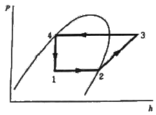
- 1.9
- 2.3
- 2.6
- 3.3
(정답률: 49%)
29. 밀폐계에서 비가역 단열과정에 대한 엔트로피 변화를 옳게 나타낸 식은? (단, S는 엔트로피, CP는 정압비열, T는 온도, R은 기체상수, P는 압력, Q는 열량을 나타낸다.)
- dS=0
- dS＞0
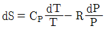
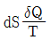
(정답률: 58%)
30. 압력이 1000kPa이고 은도가 400℃인 과열증기의 엔탈피는 약 몇 kJ/kg인가? (단, 압력이 1000kPa일 때 포화온도는 179.1℃, 포화증기의 엔탈피는 2775kJ/kg이고, 과열증기의 평균비열은 2.2kJ/(kgㆍK)이다.)
- 1547
- 2452
- 3261
- 4453
(정답률: 33%)
31. 표준 증기압축 냉동사이클을 설명한 것으로 옳지 않은 것은?
- 압축과정에서는 기체상태의 냉매가 단열압축되어 고온고압의 상태가 된다.
- 증발과정에서는 일정한 압력상태에서 저온부로부터 열을 공급 받아 냉매가 증발한다.
- 응축과정에서는 냉매의 압력이 일정하며 주위로의 연방출을 통해 냉매가 포화액으로 변한다.
- 팽창과정은 단열상태에서 일어나며, 대부분 등엔트로피 팽창을 한다.
(정답률: 53%)
32. 이상기체를 등온과정으로 초기 체적의 1/2로 압축하려 한다. 이때 필요한 압축일의 크기는? (단, m은 질량, R은 기체상수, T는 온도이다.)
- 1/2mRT×ln2
- mRT×ln2
- 2mRT×ln2
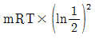
(정답률: 51%)
33. 이상기체 1mol이 그림의 b 과정(2 → 3 과정)을 따를 때 내부에너지의 변화량은 약 몇 J 인가? (단, 정적비열은 1.5×R이고, 기체상수 R은 8.314kJ/(kmolㆍK) 이다.)
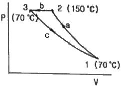
- －333
- －665
- －998
- －1662
(정답률: 52%)
34. 다음 온도(T)-엔트로피(s) 선도에 나타난 랭킨(Rankine) 사이클의 효율을 바르게 나타낸 것은?
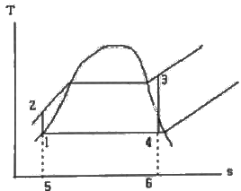
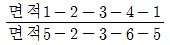
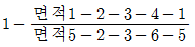
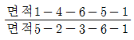
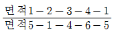
(정답률: 57%)
35. 어떤 기체의 이상기체상수는 2.08kJ/(kgㆍK)이고 정압비열은 5.24kJ/(kgㆍK)일 때, 이 가스의 정적비열은 약 몇 kJ/(kgㆍK)인가?
- 2.18
- 3.16
- 5.07
- 7.20
(정답률: 61%)
36. Rankine cycled 4개 과정으로 옳은 것은?
- 가역단열팽창 → 정압방열 → 가역단열압축 → 정압가열
- 가역단열팽창 → 가역단열압축 → 정압가열 → 정압방열
- 정압가열 → 정압방열 → 가역단열압축 → 가역단열팽창
- 정압방열 → 정압가열 → 가역단열압축 → 가역단열팽창
(정답률: 73%)
37. 동일한 온도, 압력 조건에서 포화수 1kg과 포화증기 4kg을 혼합하여 습증기가 되었을 이 증기의 건도는?
- 20%
- 25%
- 75%
- 80%
(정답률: 55%)
38. 냉동기에 사용되는 냉매의 구비조건으로 옳지 않은 것은?
- 응고점이 낮을 것
- 액체의 표면장력이 작을 것
- 임계점(critical point)이 낮을 것
- 비열비가 작을 것
(정답률: 55%)
39. 다음 중 포화액과 포화증기의 비엔트로피 변화량에 대한 설명으로 옳은 것은?
- 온도가 올라가면 포화액의 비엔트로피는 감소하고 포화증기의 비엔트로피는 증가한다.
- 온도가 올라가면 포화액의 비엔트로피는 증가하고 포화증기의 비엔트로피는 감소한다.
- 온도가 올라가면 포화액과 포화증기의 비엔트로피는 감소한다.
- 온도가 올라가면 포화액과 포화증기의 비엔트로피는 증가한다.
(정답률: 45%)
40. 다음 공기 표준 사이클(air standard cycle) 중 두 개의 등온과정과 두 개의 정압과정으로 구성된 사이클은?
- 디젤(Diesel) 사이클
- 사바테(Sabathe) 사이클
- 에릭슨(Ericsson) 사이클
- 스터링(Stirling) 사이클
(정답률: 66%)
3과목: 계측방법
41. 다음 중 계량단위에 대한 일반적인 요건으로 가장 적절하지 않은 것은?
- 정확한 기준이 있을 것
- 사용하기 편리하고 알기 쉬울 것
- 대부분의 계량단위를 60진법으로 할 것
- 보편적이고 확고한 기반을 가진 안정된 원기가 있을 것
(정답률: 76%)
42. 다음 중 송풍량을 일정하게 공급하려고 할 때 가장 적당한 제어방식은?
- 프로그램제어
- 비율제어
- 추종제어
- 정치제어
(정답률: 60%)
43. 다음 중 오리피스(orifice), 벤투리관(venturi tube)을 이용하여 유량을 측정하고자 할 때 요한 값으로 가장 적절한 것은?
- 측정기구 전후의 압력차
- 측정기구 전후의 온도차
- 측정기구 입구에 가해지는 압력
- 측정기구의 출구 압력
(정답률: 75%)
44. 다음 가스분석 방법 중 물리적 성질을 이용한 것이 아닌 것은?
- 밀도법
- 연소열법
- 열전도율법
- 가스크로마토그래프법
(정답률: 55%)
45. 다음 중 공기식 전송을 하는 계장용 압력계의 공기압신호는 몇 kg/cm2인가?
- 0.2~1.0
- 1.5~2.5
- 3~5
- 4~20
(정답률: 59%)
46. 열전대 온도계의 보호관 중 상용 사용온도가 약 1000℃이며, 내열성, 내산성이 우수하나 환원성 가스에 기밀성이 약간 떨어지는 것은?
- 카보런덤관
- 자기관
- 석영관
- 황동관
(정답률: 52%)
47. 베르누이 정리를 응용하며 유량을 측정하는 방법으로 액체의 전압과 전압과의 차로부터 순간치 유량을 측정하는 유량계는?
- 로터미터
- 피토관
- 임펠러
- 휘트스톤 브릿지
(정답률: 67%)
48. 다음 그림과 같은 U자관에서 유도되는 식은?
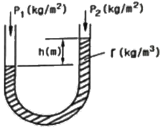
- P1=P2-h
- h=γ(P1-P2)
- P1+P2=γh
- P1=P2+γh
(정답률: 56%)
49. 온도계의 동작 지연에 있어서 온도계의 최초 지시치가 To(℃), 측정한 온도가 x(℃)일때, 온도계 지시치 T(℃)와 시간 와의 관계식은? (단, λ는 시정수이다.)
- dT/dτ＝(x－To)/λ
- dT/dτ＝λ/(x－To)
- dT/dτ＝(λ－x)/To
- dT/dτ＝To/(λ－x)
(정답률: 55%)
50. 다음 집진장치 중 코트렐식과 관계가 있는 방식으로 코로나 방전을 일으키는 것과 관련 있는 집진기로 가장 적절한 것은?
- 전기식 집진기
- 세정식 집진기
- 원심식 집진기
- 사이클론 집진기
(정답률: 66%)
51. U자관 압력계에 사용되는 액주의 구비조건이 아닌 것은?
- 열팽창계수가 작을 것
- 모세관현상이 적을 것
- 화학적으로 안정될 것
- 점도가 클 것
(정답률: 68%)
52. 다음 중 비접촉식 온도계는?
- 색온도계
- 저항온도계
- 압력식온도계
- 유리온도계
(정답률: 72%)
53. 20ℓ인 물의 온도를 15℃에서 80℃로 상승시키는 데 필요한 열량은 약 몇 kJ 인가?
- 4680
- 5442
- 6320
- 6860
(정답률: 51%)
54. 1차 제어 장치가 제어량을 측정하여 제어 명령을 발하고 2차 제어 장치가 이 명령을 바탕으로 제어량을 조절할 때, 다음 중 측정 제어로 가장 적절한 것은?
- 주치제어
- 프로그램제어
- 캐스케이드제어
- 시퀀스제어
(정답률: 71%)
55. 다음 중 용적식 유량계에 해당하는 것은?
- 오리피스미터
- 습식가스미터
- 로터미터
- 피토관
(정답률: 34%)
56. 열전대 온도계 보호관 중 내열강 SEH-5에 대한 설명으로 옳지 않은 것은?
- 내식성, 내열성 및 강도가 좋다.
- 자기관에 비해 저온측정에 사용된다.
- 유황가스 및 산화염에도 사용이 가능하다.
- 상용온도는 800℃이고 최고 사용 온도는 850℃까지 가능하다.
(정답률: 61%)
57. 다음 용어에 대한 설명으로 옳지 않은 것은?
- 측정량：측정하고자 하는 양
- 값：양의 크기를 함께 수화 기준
- 제어편차：목표치에 제어량을 더한 값
- 양：수와 기준으로 표시할 수 있는 크기를 갖는 현상이나 물체 또는 물질의 성질
(정답률: 66%)
58. 다음 중 가스의 열전도율이 가장 큰 것은?
- 공기
- 메탄
- 수소
- 이산화탄소
(정답률: 61%)
59. 다음 중 수분 흡수법에 의해 습도를 측정할 때 흡수제로 사용하기에 가장 적절하지 않은 것은?
- 오산화인
- 피크린산
- 실리카겔
- 황산
(정답률: 46%)
60. 페루프를 형성하여 출력측의 신호를 입력측에 되돌리는 제어를 의미하는 것은?
- 뱅뱅
- 리셋
- 시퀀스
- 피드백
(정답률: 74%)
4과목: 열설비재료 및 관계법규
61. 에너지이용 합리화법에 따라 냉난방온도의 제한온도 기준 및 건물의 지정기준에 대한 설명으로 틀린 것은?
- 공공기관의 건물은 냉방온도 26℃ 이상, 난방온도 20℃ 이하의 제한온도를 둔다.
- 판매시설 및 공항은 냉방온도의 제한온도는 25℃ 이상으로 한다.
- 숙박시설 중 객실 내부 구역은 냉방온도의 제한온도는 25℃ 이상으로 한다.
- 의료법에 의한 의료기관의 실내구역은 제한온도를 적용하지 않을 수 있다.
(정답률: 66%)
62. 에너지이용 합리화법에 따라 자발적 협약체결기업에 대한 지원을 받기 위해 에너지 사용자와 정부 간 자발적 협약의 평가기준에 해당하지 않는 것은?
- 에너지 절감량 또는 온실가스 배출 감축량
- 계획 대비 달성률 및 투자실적
- 자원 및 에너지의 재활용 노력
- 에너지이용합리화자금 활용실적
(정답률: 59%)
63. 에너지이용 합리화법에서 목표에너지원단위란 무엇인가?
- 연료의 단위당 제품생산목표량
- 제품의 단위당 에너지사용목표량
- 제품의 생산목표량
- 목표량에 맞는 에너지사용량
(정답률: 67%)
64. 작업이 간편하고 조업주기가 단축되며 요체의 보유열을 이용할 수 있어 경제적인 반연속식 요는?
- 셔틀요
- 윤요
- 터널요
- 도염식요
(정답률: 65%)
65. 연료를 사용하지 않고 용선의 보유열과 용선속 불순물의 산화열에 의해서 노 내 온도를 유지하며 용강을 얻는 것은?
- 평로
- 고로
- 반사로
- 전로
(정답률: 55%)
66. 에너지이용 합리화법에 따른 검사 대상기기에 해당하지 않는 것은?
- 가스 사용량이 17kg/h를 초과하는 소형온수보일러
- 정격용량이 0.58MW를 초과하는 철금속가열로
- 온수를 발생시키는 보일러로서 대기개방형인 주철제 보일러
- 최고사용압력이 0.2MPa를 초과하는 증기를 보유하는 용기로서 내용적이 0.004m3 이상인 용기
(정답률: 47%)
67. 외경 65mm의 증기관이 수평으로 설치되어 있다. 증기관의 보온된 표면온도는 55℃, 외기온도는 20℃일 때 관의 열 손실량(W)은? (단, 이 때 복사열은 무시한다.)
- 29.5
- 36.6
- 44.0
- 60.0
(정답률: 38%)
68. 에너지법에서 정의하는 용어에 대한 설명으로 틀린 것은?
- “에너지사용자”란 에너지사용시설의 소유자 또는 관리자를 말한다.
- “에너지사용시설”이란 에너지를 사용하는 공장, 사업장 등의 시설이나 에너지를 전환하여 사용하는 시설을 말한다.
- “에너지공급자”란 에너지를 생산, 수입, 전환, 수송, 저장, 판매하는 사업자를 말한다.
- “연료”란 석유, 석탄, 대체에너지 기타 열 등으로 제품의 원료로 사용되는 것을 말한다.
(정답률: 48%)
69. 관로의 마찰손실수두의 관계에 대한 설명으로 틀린 것은?
- 유체의 비중량에 반비례한다.
- 관 지름에 반비례한다.
- 유체의 속도에 비례한다.
- 관 길이에 비례한다.
(정답률: 28%)
70. 다음 열사용기자재에 대한 설명으로 가장 적절한 것은?
- 연료 및 열을 사용하는 기기, 축열식 전기기기와 단열성 자재를 말한다.
- 일명 특정 열사용기자재라고도 한다.
- 연료 및 열을 사용하는 기기만을 말한다.
- 기기의 설치 및 시공에 있어 안전관리, 위해방지 또는 에너지이용의 효율관리가 특히 필요하다고 인정되는 기자재를 말한다.
(정답률: 50%)
71. 에너지이용 합리화법에 따라 검사대상기기의 설치자가 사용 중인 검사대상기기를 폐기한 경우에는 폐기한 날부터 최대 며칠 이내에 검사대상기기 폐기신고서를 한국에너지공단이사장에게 제출하여야 하는가?
- 7일
- 10일
- 15일
- 200일
(정답률: 61%)
72. 다이어프램 밸브(diaphragm valve)에 대한 설명으로 틀린 것은?
- 화학약품을 차단함으로써 금속부분의 부식을 방지한다.
- 기밀을 유지하기 위한 패킹을 필요로 하지 않는다.
- 저항이 적어 유체의 흐름이 원활하다.
- 유체가 일정 이상의 압력이 되면 작동하여 유체를 분출시킨다.
(정답률: 58%)
73. 터널가마에서 샌드 시일(sand seal)장치가 마련되어 있는 주된 이유는?
- 내화벽돌 조각이 아래로 떨어지는 것을 막기 위하여
- 열 절연의 역할을 하기 위하여
- 찬바람이 가마 내로 들어가지 않도록 하기 위하여
- 요차를 잘 움직이게 하기 위하여
(정답률: 62%)
74. 다음 중 중성내화물에 속하는 것은?
- 납석질 내화물
- 고알루미나질 내화물
- 반규석질 내화물
- 샤모트질 내화물
(정답률: 59%)
75. 보온재 내 공기 이외의 가스를 사용하는 경우 가스분자량이 공기의 분자량보다 적으면 보온재의 열전도율의 변화는?
- 동일하다.
- 낮아진다.
- 높아진다.
- 높아지다가 낮아진다.
(정답률: 55%)
76. 다음 중 고온용 보온재가 아닌 것은?
- 우모펠트
- 규산칼슘
- 세라믹화이버
- 펄라이트
(정답률: 63%)
77. 연속가마, 반연속가마, 불연속가마의 구분 방식은 어떤 것인가?
- 온도상승 속도
- 사용목적
- 조업방식
- 전열방식
(정답률: 70%)
78. 에너지이용 합리화법에 따라 인정검사 대상기기 조종자의 교육을 이수한 자의 조종 범위에 해당하지 않는 것은?
- 용량이 3t/h인 노통 연관식 보일러
- 압력용기
- 온수를 발생하는 보일러로서 용량이 300kW인 것
- 증기 보일러로서 최고사용 압력이 0.5MPa이고 전열면적이 9m2인 것
(정답률: 48%)
79. 보온재의 열전도율에 대한 설명으로 틀린 것은?
- 재료의 두께가 두꺼울수록 열전도율이 낮아진다.
- 재료의 밀도가 클수록 열전도율이 낮아진다.
- 재료의 온도가 낮을수록 열전도율이 낮아진다.
- 재질 내 수분이 적을수록 열전도율이 낮아진다.
(정답률: 66%)
80. 에너지이용 합리화법에 따라 검사 대상기기 조종자의 해임신고는 신고 사유가 발생한 날로부터 며칠 이내에 하여야 하는가?
- 15일
- 20일
- 30일
- 60일
(정답률: 64%)
5과목: 열설비설계
81. 다음 [보기]에서 설명하는 보일러 보존방법은?
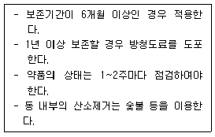
- 석회밀폐 건조보존법
- 만수보존법
- 질소가스 봉입보존법
- 가열건조법
(정답률: 58%)
82. 다음 중 인젝터의 시동순서로 옳은 것은?
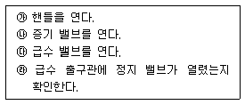
- ㉱ → ㉰ → ㉯ → ㉮
- ㉯ → ㉰ → ㉮ → ㉱
- ㉰ → ㉯ → ㉱ → ㉮
- ㉱ → ㉰ → ㉮ → ㉯
(정답률: 67%)
83. 보일러 사고의 원인 중 제작상의 원인으로 가장 거리가 먼 것은?
- 재료불량
- 구조 및 설계불량
- 용접불량
- 급수처리불량
(정답률: 68%)
84. 바이메탈 트랩에 대한 설명으로 옳은 것은?
- 배기능력이 탁월하다.
- 과열증기에도 사용할 수 있다.
- 개폐온도의 차가 적다.
- 밸브폐색의 우려가 있다.
(정답률: 43%)
85. 증기 10t/h를 이용하는 보일러의 에너지 진단 결과가 아래 표와 같다. 이 때, 공기비 개선을 통한 에너지 절감률(%)은?
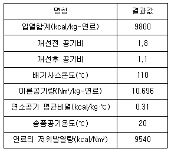
- 1.6
- 2.1
- 2.8
- 3.2
(정답률: 36%)
86. 물의 탁도(turbidity)에 대한 설명으로 옳은 것은?
- 증류수 1L 속에 정제카올린 lmg을 함유하고 있는 색과 동일한 색의 물은 탁도 1도의 물로 한다.
- 증류수 1L 속에 정제카올린 1g을 함유하고 있는 색과 동일한 색의 물을 탁도 1도의 물로 한다.
- 증류수 1L 속에 황산칼슘 1mg을 함유하고 있는 색과 동일한 색의 물을 탁도 1도의 물로 한다.
- 증류수 1L 속에 황산칼슘 1g을 함유하고 는 색과 동일한 색의 물을 탁도 1도의 물로 한다.
(정답률: 69%)
87. 열교환기에 입구와 출구의 온도차가 각각 △θʹ, △θʺ일 때 대수평균 온도차(△θm)의 식은? (단, △θʹ＞△θʺ이다.)
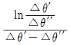
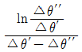
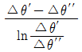
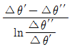
(정답률: 55%)
88. 히트파이프의 열교환기에 대한 설명으로 틀린 것은?
- 열저항이 적어 낮은 온도차에서도 열회수가 가능
- 전열면적을 크게 하기 위해 핀튜브를 사용
- 수평, 수직, 경사구조로 설치 가능
- 별도 구동장치의 동력이 필요
(정답률: 57%)
89. 보일러의 증발량이 20 ton/h 이고, 보일러 본체의 전열면적이 450m2 일 때, 보일러의 증발률(kg/m2 ㆍ h)은?
- 24
- 34
- 44
- 54
(정답률: 56%)
90. 해수 마그네시아 정전 반응을 바르게 나타낸 식은?
- 3MgO＋2SiO2⋅2H2O+3CO2 → 3MgCO2+25O2+2H2O
- CaCO3+MgCO3→CaMg(CO2)2
- CaMg(CO2)2+MgCO2→2MgCO3+CaCO3
- MgCO3+Ca(OH)2→Mg(OH)2+CaCO3
(정답률: 55%)
91. 육용강제 보일러에서 길이 스테이 또는 정사스테이를 핀 이음으로 부착할 경우, 스테이휠 부분의 단면적은 스테이 소요 단면적의 얼마 이상으로 하여야 하는가?
- 1.0배
- 1.25배
- 1.5배
- 1.75배
(정답률: 49%)
92. 보일러와 압력용기에서 일반적으로 사용되는 계산식에 의해 산정되는 두께에 부식여유를 포함한 두께를 무엇이라 하는가?
- 계산 두께
- 실제 두께
- 최소 두께
- 최대 두께
(정답률: 68%)
93. 원수(原水) 중의 용존 산소를 제거할 목적으로 사용되는 약제가 아닌 것은?
- 탄닌
- 히드라진
- 아황산나트륨
- 폴리아미드
(정답률: 56%)
94. 지름이 5cm인 강관(50W/mㆍK) 내에 98K의 온수가 0.3m/s로 흐를 때, 온수의 열전달계수(W/m2ㆍK)는? (단, 온수의 열전도도는 0.68W/mㆍK이고, Nm수(Nusselt mumber)는 160이다.)
- 1238
- 2176
- 3184
- 4232
(정답률: 43%)
95. 맞대기 용접은 용접방법에 따라 그루브를 만들어야 한다. 판 두께 10mm에 할 수 있는 그루브의 형상이 아닌 것은?
- V형
- R형
- H형
- J형
(정답률: 69%)
96. 저압용으로 내식성이 크고, 청소하기 쉬운 구조이며, 증기압이 2kg/cm2 이하의 경우에 사용되는 절탄기는?
- 강관식
- 이중관식
- 주철관식
- 황동관식
(정답률: 58%)
97. 육용강제 보일러에서 오목면에 압력을 받는 스테이가 없는 접시형 경판으로 노통을 설치할 경우, 경판의 최소 두께(mm)를 구하는 식으로 옳은 것은? (단, P : 최고 사용압력(kg/cm2), R : 접시모양 경판의 중앙부에서의 내면 반지름(mm), σa : 재료의 허용 인장응력(kg/mm2), : 경판자체의 이음효율, A : 부식여유(mm)이다.)
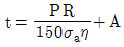
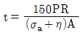
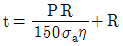
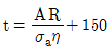
(정답률: 65%)
98. 급수처리에서 양질의 급수를 얻을 수 있으나 비용이 많이 들어 보급수의 양이 적은 보일러 또는 선박보일러에서 해수로부터 철수를 얻고자 할 때 주로 사용하는 급수처리 방법은?
- 증류법
- 여과법
- 석회소다법
- 이온교환법
(정답률: 69%)
99. 다음 중 기수분리의 방법에 따른 분류로 가장 거리가 먼 것은?
- 장애판을 이용한 것
- 그물을 이용한 것
- 방향전환을 이용한 것
- 압력을 이용한 것
(정답률: 57%)
100. 노통 보일러이 평형 노통을 일체형으로 제작하면 강도가 약해지는 결점이 있다. 이러한 결점을 보완하기 위하여 몇 개의 플랜지형 노통으로 제작하는 데 이 때의 이음부를 무엇이라 하는가?
- 브리징 스페이스
- 가세트 스테이
- 평형 조인트
- 아담슨 조인트
(정답률: 55%)